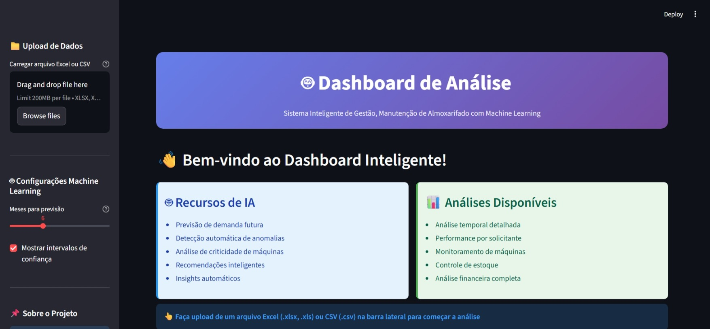
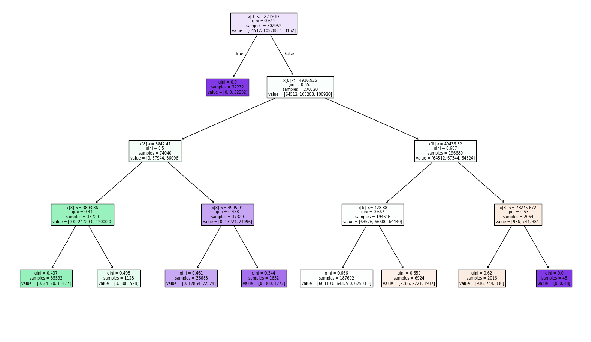
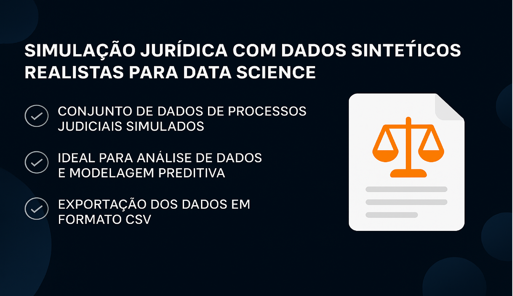
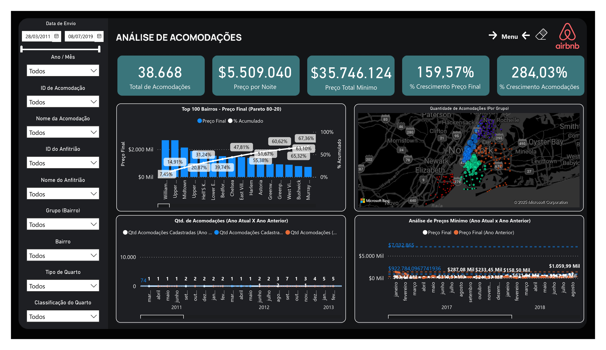

Dashboard de Almoxarifado com Machine Learning
Sistema inteligente desenvolvido para análise preditiva e gestão estratégica de almoxarifado industrial.
Utiliza técnicas avançadas de Machine Learning para prever demandas, detectar anomalias
e otimizar processos de manutenção. O dashboard oferece interface interativa com
Streamlit, suportando arquivos Excel e CSV.
- Ferramentas: Python, Streamlit, Scikit-learn, Prophet, Plotly, Pandas
- Modelos ML: Linear Regression, Random Forest, Gradient Boosting, Prophet (Meta)
- Funcionalidades: Previsões 3-12 meses, detecção de anomalias, análise de criticidade, controle financeiro
- Destaque: Patch para NumPy 2.0+, validação automática de dados, gráficos interativos ordenados cronologicamente

Análise de Cohort – SuperStore
Utilizando Excel, desenvolvi uma análise de retenção de clientes (Cohort Analysis) com dados reais de uma rede nacional de supermercados. A partir da limpeza e estruturação dos dados, identifiquei os melhores grupos de aquisição e padrões de comportamento, gerando insights estratégicos para retenção e vendas.
- Ferramentas: Excel, PROCV, Tabelas Dinâmicas, Formatação Condicional
- Resultado: Cohort de maio/2014 teve a melhor retenção após 6 meses (11%)
- Insight-chave: Campanhas promocionais impactam positivamente a recompra

Análise RFM – Segmentação de Clientes
Classifiquei clientes com base em seu comportamento de compra utilizando a técnica de RFM (Recência, Frequência e Monetização). A análise permite segmentar a base de clientes para criar campanhas personalizadas e maximizar o retorno em marketing.
- Ferramentas: Excel (ÍNDICE, CORRESP, SOMASE, PERCENTIL)
- Segmentos criados: Campeões, Fiéis, Promissores, Perdidos e mais
- Resultados: 40% dos clientes são potenciais fiéis; apenas 1% “Não Perder”

DataLuz – Plataforma SaaS para E-commerces
Desenvolvi uma solução digital fictícia para pequenos e médios e-commerces que enfrentam dificuldades com análise de dados. A DataLuz oferece dashboards intuitivos, alertas automáticos via WhatsApp e relatórios personalizados. O projeto faz parte do curso da Comunidade DS e engloba a criação completa de um modelo de negócio digital com estratégias AARRR.
- Ferramentas: Estratégias de Produto, Métricas AARRR, Jornada do Cliente
- Problema: Falta de tempo e conhecimento técnico para BI
- Solução: Integração via API, relatórios automáticos e visualização simplificada
- Destaque: Envio de insights direto no WhatsApp do empreendedor

Previsão de Fidelidade com IA – Classificação de Clientes
Neste projeto, desenvolvi um modelo de Machine Learning usando Árvore de Decisão para prever a propensão de clientes aderirem a cartões de fidelidade (Aurora, Nova e Star).
A interface foi construída com Gradio, permitindo que qualquer pessoa simule a classificação de um novo cliente de forma intuitiva. Ideal para aplicações de marketing e retenção.
- Ferramentas: Python, Pandas, Scikit-Learn, Gradio, Matplotlib
- Problema: Empresas não sabiam prever a chance de um cliente aderir à fidelidade
- Solução: Classificação com árvore de decisão + interface interativa Gradio
- Destaque: Projeto com deploy interativo e visualização da árvore em tempo real

Simulação Jurídica com Dados Sintéticos para Data Science
Neste projeto, desenvolvi um gerador de dados jurídicos sintéticos e realistas, criando um dataset completo com 2.000 processos, partes envolvidas e movimentações. A solução é ideal para demonstrar habilidades em análise, BI e modelagem preditiva em um cenário que simula o mundo real do Direito.
- Ferramentas: Python, Pandas, Faker
- Problema: A dificuldade de obter dados jurídicos detalhados para treinamento e criação de portfólio devido à confidencialidade.
- Solução: Um script que gera um dataset robusto e verossímil, exportado em .csv, pronto para ser consumido por ferramentas como Power BI, Excel ou Python.
- Destaque: Capacidade de simular um ambiente complexo, incluindo valores de causa, provisão de risco, fases processuais e advogados responsáveis.

Análise de Acomodações e Preços – Airbnb NYC
Projeto completo de Análise de Dados utilizando um grande dataset do Airbnb de Nova York. A proposta foi transformar milhares de registros em insights estratégicos sobre acomodações, preços e padrões de localização, por meio de um dashboard dinâmico e visualmente intuitivo no Power BI.
- Ferramentas: Power BI, Power Query, DAX
- Destaques: Gráfico de Pareto (Top 100 bairros), mapa geográfico, análise temporal e indicadores de desempenho (KPIs)
- Insight-chave: Identificação dos bairros com maior concentração de acomodações premium e padrões de preços por estação do ano